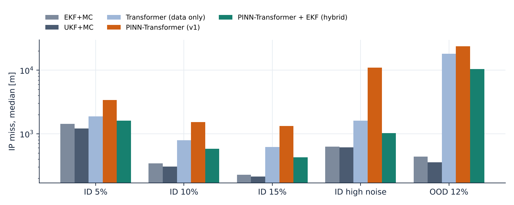
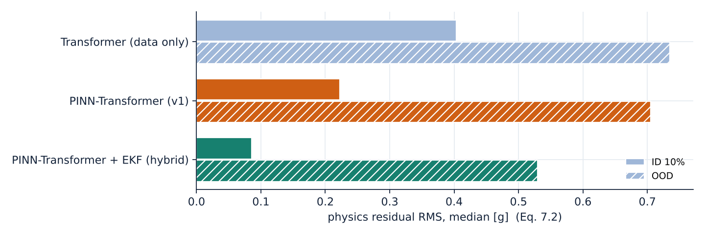
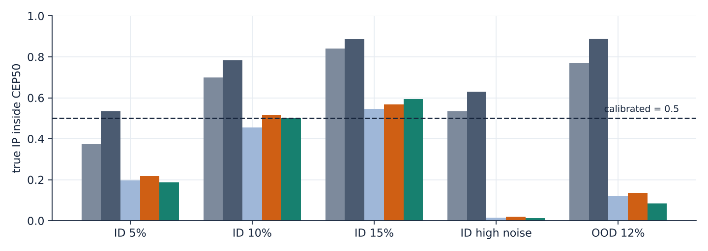
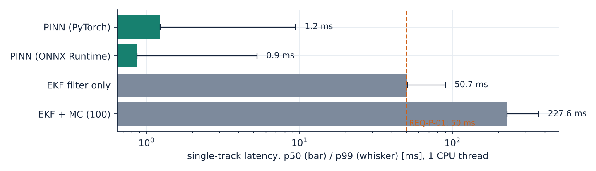

TrajAI-Defense
물리 제약 신경망 기반 실시간 탄도 궤도 예측 및 위협 평가 시스템
요격 체계의 교전 판단은 표적의 탄착점(IP)과 탄착 시각(ToT)을 얼마나 빨리, 얼마나 믿을 수 있게 아느냐에 달려 있습니다. 확장 칼만 필터(EKF)나 수치 적분 기반 예측은 대기 밀도 변화, 마하수에 따른 항력 변화, 기동이 있으면 연산 비용과 추정 오차가 함께 커집니다. 순수 데이터 기반 신경망은 빠르지만 관측이 적은 초기 구간에서 운동 방정식을 위반하는 궤적을 출력할 수 있습니다.
TrajAI-Defense는 비행 초기 10~15% 구간의 레이더 트랙을 시계열 인코더(Transformer / Bi-LSTM)로 요약하고, 운동 방정식 잔차를 손실에 포함한 물리 제약 신경망(PINN)으로 잔여 궤적, IP, ToT, CEP를 추론합니다. 목표는 단일 표적 추론 50 ms 이하, 기존 대비 CEP 추정 오차 40% 감소입니다. 이 문서는 운용 개념, 동역학 모델, 추정 문제 정식화, 학습 설계, 데이터셋, 검증 방법과 실험 결과를 정리합니다. 현재 결과로는 지연 목표는 충족하지만, 정확도는 같은 물리 모델을 쓰는 EKF/UKF에 아직 못 미칩니다. 선택 일자의 실제 기온·바람을 대기 모델에 반영하면 IP 오차가 크게 줄어(§9.3) 이를 기본 설정으로 채택했습니다.
궤도 추정 시연: 물리 기반 Baseline
아래 시연은 PINN이 대체하려는 기준 문제를 브라우저에서 직접 계산합니다. 7차원 상태(위치, 속도, ln β)의 확장 칼만 필터(EKF)가 잡음 섞인 레이더 트랙을 순차 처리해 관측 종료 시점의 상태와 공분산을 추정하고, 그 사후분포에서 표본을 뽑아 Monte Carlo로 IP 분포와 CEP를 구합니다. 관측 구간을 줄이거나 센서 잡음을 키우면 분산이 어떻게 커지는지 확인할 수 있습니다.
표준 대기 (기상 미적용)
운용 개념과 문제 정의
추진 · 상승
탐지와 초기 추적. 시스템 입력은 이 구간과 중간 비행 초입까지의 트랙(전체의 10~15%)입니다.
중간 비행
고고도에서는 항력이 작아 β를 관측하기 어렵습니다. 변칙 활공 비행체(HGV)는 이 구간에서 양력 기동으로 탄도 궤적을 벗어납니다.
종말 · 재진입
항력이 지배적이 되어 β 오차가 하향거리 IP 오차로 크게 증폭됩니다.
| 접근 | 한계 | TrajAI-Defense의 대응 |
|---|---|---|
| EKF / 수치 적분 예측 | 비선형 동역학을 반복 선형화·적분하므로 연산이 초 단위로 늘어남. 모델 불일치(대기 외란, 질량 변화)가 있으면 필터가 발산 | 추론을 단일 순전파로 대체해 지연을 상수 시간으로 묶음 |
| 순수 데이터 기반 시계열 모델 | 짧은 관측에서 음의 가속도나 비물리적 급선회 같은 궤적을 출력. 학습 분포 밖에서 일반화가 약함 | 운동 방정식 잔차를 손실에 넣어 해 공간을 물리적으로 허용되는 궤적으로 제한 |
| 단일 점 예측 | 교전 판단에 필요한 불확실성(CEP, ToT 분산)을 제공하지 않음 | 앙상블과 β 사후 표본으로 IP 분포를 추정하고 CEP를 함께 출력 |
주 사용자는 국방 연구기관의 M&S 연구원, 공군·해군 탄도탄 작전 통제관, 방산업체 시뮬레이션 분석관입니다. 표적 탐지 후 시스템이 트랙 스트림을 받아 50 ms 안에 IP, ToT, CEP, 위협 등급을 산출하고, 통제관은 3D 상황도에서 예측 궤적과 최적 요격점(PIP)을 확인한 뒤 요격 포대 배정을 승인합니다.
요구 성능
| ID | 요구사항 | 목표값 | 측정값 | 판정 | 검증 |
|---|---|---|---|---|---|
| REQ-F-01 | 초기 관측 구간만으로 탄착까지의 전 궤적 예측 | 관측 ≤ 15 % | 전 구간 출력, IP 오차 428 m (ID 15%) | 부분 충족 | T |
| REQ-F-02 | IP, ToT, CEP50 동시 출력 | 3종 + 1σ | 출력됨, CEP 포함률 0.59 (ID) / 0.14 (OOD) | 부분 충족 | D |
| REQ-F-03 | 예측 궤적의 물리 일관성 (운동 방정식 잔차) | 잔차 RMS ≤ 0.05 g | 0.09 g (ID 10%) | 미충족 | A |
| REQ-F-04 | 보호 자산 DB 대비 위협 등급과 요격 고도 창 산출 | 5단계 | 구현, 가상 자산으로 시연 (3D 뷰어) | 충족 | D |
| REQ-P-01 | 단일 표적 추론 지연 (전처리 제외, p99) | ≤ 50 ms | 5.3 ms (ONNX Runtime, CPU) | 충족 | T |
| REQ-P-02 | IP / CEP 추정 오차, EKF baseline 대비 | −40 % | +70 % (최선 신경망, ID 10%) | 미충족 | T |
| REQ-P-03 | 교전 판단 가용 시간 증가 | +25 s | 계산 시간 단축 0.23 s, 25 s 근거 없음 | 미충족 | A |
| REQ-I-01 | 센서 트랙 스트리밍 입력 (gRPC / Socket) | ≥ 20 Hz | 오프라인 배치 평가만 | 미구현 | I |
REQ-P-01은 기획서의 추론 시간 목표(약 3 s에서 0.05 s로, 95% 단축)에서 나왔습니다. REQ-F-03의 잔차 기준은 §7의 물리 손실과 같은 식으로 계산하며, 현재 측정값과 판정 근거는 §9.2에 있습니다.
시스템 아키텍처
| 계층 | 역할 | 기술 |
|---|---|---|
| Data | 비행 시뮬레이션, Monte Carlo 파라미터 표본 추출, 센서 잡음 주입 | Python 3.10 · NumPy · pandas · OpenRocket |
| AI Engine | 시계열 인코딩, PINN 디코딩, 앙상블 불확실성, 추론 서빙 | PyTorch · ONNX · TensorRT |
| Presentation | 3D 상황도, CEP 타원, PIP, 위협 평가 패널 | CesiumJS · Three.js · Plotly |
| 환경 | 개발 및 학습 | Ubuntu 22.04 / Windows 11 · VS Code · Colab |
비행 동역학 모델
기준 모델은 국소 평면 지구(ENU) 좌표계의 3자유도 가변질량 점질량 모델입니다. 수백 km 이하 사거리에서는 지구 곡률과 코리올리 효과가 IP에 주는 영향이 2차 오차이므로 1단계에서는 무시하고, 6-DOF 확장 시 WGS-84 회전 지구 모델로 바꿉니다.
식 (5.5)에서 보듯 탄도 비행 구간의 궤적은 질량, 형상, 항력을 묶은 탄도계수 β 하나로 매개화됩니다. 따라서 IP 예측 문제는 사실상 "초기 상태와 β를 얼마나 정확히 아느냐"의 문제가 됩니다. 수치 적분은 4차 Runge–Kutta(RK4)를 쓰며, Δt = 0.05 s에서 전역 오차는 O(Δt4)입니다. 현재 생성기의 명시적 Euler(1차)보다 같은 정확도에서 훨씬 큰 시간 간격을 쓸 수 있습니다.
| 기호 | 정의 | 단위 |
|---|---|---|
| r, v | ENU 위치, 속도 | m, m/s |
| h | 고도 (= z) | m |
| m, A | 질량, 기준 단면적 | kg, m² |
| CD(M) | 마하수 의존 항력 계수 | — |
| β | 탄도계수 | kg/m² |
| T, Isp, tb | 추력, 비추력, 연소 시간 | N, s, s |
| 기호 | 값 | 비고 |
|---|---|---|
| g0 | 9.80665 m/s² | 표준 중력 |
| Re | 6,371 km | 평균 지구 반경 |
| ρ0, H | 1.225 kg/m³, 8.5 km | 지수 대기 근사 |
| a(h) | √(γ R T(h)) | USSA-1976 온도 분포 |
| γ, R | 1.4, 287.05 J/kg·K | 건조 공기 |
관측 모델과 칼만 필터
레이더는 거리, 방위각, 고각을 측정하므로 직교 좌표에서의 잡음은 등방성이 아닙니다. 식 (6.2)처럼 횡방향 오차는 거리에 비례해 커지며, 같은 각도 정밀도라도 원거리 표적일수록 측방 위치가 불확실합니다. 전처리 단계는 극좌표 측정을 ENU로 변환하고(변환 편향 보정 포함) Rauch–Tung–Striebel(RTS) 고정 구간 평활기로 관측 구간 전체를 평활해 학습 입력과 같은 분포로 맞춥니다.
탄도계수는 상태에 ln β로 확장해 추정합니다. 로그 매개화는 β > 0을 보장하고 수 배 범위에 걸친 사전분포를 다루기 쉽게 합니다. 항력 가속도 ρv²/2β가 측정 잡음이 만드는 가속도 불확실성보다 작으면 β는 관측 불가능합니다.
6.1확장 칼만 필터 (EKF)
비선형 동역학 (5.5)를 측정 간격마다 RK4로 전파하고, 상태 전이 야코비안으로 공분산을 선형 전파합니다. 시연(Fig. 1)과 비교 baseline(Table 11)이 이 필터를 그대로 씁니다.
| 항목 | 설정 | 근거 |
|---|---|---|
| 상태 | x = [r, v, ln β] ∈ ℝ⁷ | β > 0 보장, 넓은 사전 범위 |
| 전파 Φ | RK4, Δt = 0.5 s (2 sub-step) | 식 (5.5) 전체 비선형 모델 |
| 야코비안 F | Φ의 수치 전방 차분 | CD(M), g(h)까지 일관되게 선형화 |
| 공정 잡음 | qa = 0.5 m²/s³, qβ = 2×10⁻⁴ s⁻¹ | 모델 불일치 흡수, 공분산 붕괴 방지 |
| 측정 | H = [I₃ 0], R = σ²I₃ | 변환 측정(converted measurement) 가정 |
| 초기화 | 2점 차분, ln β₀ = ln 3000, σ = 1.2 | β ≈ 300–30,000 kg/m² (±2σ) |
| 공분산 갱신 | Joseph 형식 + 대칭화 | 수치적 양정치성 유지 |
| 일관성 검정 | 평균 NIS vs χ²₃ | 과신·과소신 진단 |
실제 레이더의 측정은 극좌표이므로 운용 버전은 H 대신 식 (6.1)의 h(x)와 그 야코비안을 쓰는 EKF 갱신, 또는 시그마 포인트로 비선형 측정을 다루는 UKF를 씁니다. 선형화 오차가 큰 초기 구간(공분산이 큰 구간)에서는 UKF가 EKF보다 일관성이 좋다는 것이 일반적인 결과이며, 이 비교는 Table 11에 포함됩니다.
6.2칼만 필터와 PINN의 결합
| 역할 | 방식 | 효과 |
|---|---|---|
| 전처리 | RTS 고정 구간 평활기로 관측 구간 트랙을 평활하고 속도·가속도 특징 생성 | 미분으로 증폭되는 잡음을 억제해 인코더 입력 분포를 안정화 |
| Baseline | EKF / UKF + Monte Carlo 분산 전파 (Fig. 1) | 같은 물리 모델 위에서 PINN의 속도·정확도 이득을 정량화 |
| 하이브리드 | EKF 사후 (x̂, P)를 PINN 인코더의 추가 입력으로 넣고, PINN 예측 궤적을 다음 측정 시 EKF 예측 단계의 사전분포로 되먹임 | 필터가 단기 상태를, PINN이 장기 궤적과 β 사전을 담당. 새 측정마다 증분 갱신이 가능 |
PINN 설계
네트워크는 관측 시퀀스를 잠재 벡터로 요약하는 인코더와, 임의 시각 t의 위치를 출력하는 연속시간 디코더로 구성됩니다. 디코더가 t에 대해 미분 가능하므로 자동 미분으로 d²r̂/dt²를 구해 운동 방정식 잔차를 계산할 수 있습니다. 탄도계수는 디코더의 보조 출력으로 함께 추정하는 역문제로 다룹니다.
데이터 항은 관측 구간과 학습용 실제 궤적에서 계산하고, 물리 항은 정규화 시간 τ = (t − tc)/(tI − tc) ∈ [0, 1]에서 균등 추출한 Nc = 32개의 배치점(collocation point)에서 계산합니다. 위치는 L = 100 km로 무차원화하고, 연쇄 법칙 d/dt = (1/Δ) d/dτ로 잔차를 SI 단위로 되돌린 뒤 g0로 나눕니다. PINN은 손실 항 간 기울기 불균형으로 수렴이 불안정하기 쉬우므로 λp를 학습 초반 40% 동안 0에서 1까지 선형으로 늘리는 커리큘럼을 적용했습니다. 기울기 노름 기반 적응 가중 [5]은 다음 단계입니다.
| 구성 요소 | 초기 프로토타입 | 현재 구현 | 향후 |
|---|---|---|---|
| 입력 특징 | 9 | 12 (t, r, h, v, a, M), Savitzky–Golay 미분 | — |
| 전역 입력 (하이브리드) | — | EKF 사후 x̂, σ (10) | — |
| 인코더 | Bi-LSTM 2×128 | Transformer 3 layers, d 128, 4 heads (pre-LN) / Bi-LSTM 2×128 | 4 layers |
| 디코더 | MLP → 1-step | 연속시간 MLP D(τ, c), tanh, 4×160 | — |
| 출력 | 다음 1-step 위치 | r̂(τ) 전 구간, ln β̂, Δ = tI − tc, IP σx, σy | — |
| 물리 손실 | z축 1-step 잔차 | 식 (7.2) 3축 잔차, autograd 2계 미분 | — |
| λp | 0.05 고정 | 0 → 1 선형 커리큘럼 (40%) | 적응 가중 [5] |
| 최적화 | Adam 1e-3 | AdamW 1e-3, OneCycle, 1,500 step, batch 128, grad clip 1 | L-BFGS 미세 조정 |
| 불확실성 | — | IP 이분산 가우시안 헤드 (NLL) | Deep ensemble [6] |
7.1IP 분포와 CEP
앙상블 구성원과 β 사후 표본마다 디코더를 평가해 IP 표본 집합을 얻고, 평균 탄착점(MPI) μI에 대한 반경 거리의 중앙값을 CEP50으로 보고합니다. 식 (7.4)의 근사는 두 축의 표준편차 비가 1에 가까울 때만 정확하므로, 하향거리 분산이 우세한 재진입 표적에서는 표본 중앙값을 직접 씁니다.
합성 데이터셋
실측 비행 데이터는 보안상 확보할 수 없으므로 Monte Carlo로 파라미터를 표본 추출하고 §5의 모델로 적분해 합성 궤적을 만듭니다. 각 궤적에는 식 (6.1)의 극좌표 센서 잡음을 주입한 관측본과 잡음 없는 정답 궤적을 함께 저장합니다. v2 데이터셋은 연소 종료 이후의 탄도 구간을 다룹니다. 추력 곡선이 알려지지 않은 추진 구간을 넣으면 물리 잔차 (7.2)에 미지 항이 생기기 때문이며, 추진 구간 시뮬레이션(simulate_powered)은 구현되어 있으나 학습에는 아직 쓰지 않습니다.
| 파라미터 | 기호 | 학습 / ID 시험 | OOD 시험 |
|---|---|---|---|
| 연소 종료 고도 | h0 | 8 – 25 km | 8 – 25 km |
| 연소 종료 속도 | V0 | 0.9 – 1.9 km/s | 1.9 – 2.2 km/s |
| 경로각 | γ0 | 30 – 60° | 25 – 65° |
| 방위각 (하향거리 기준) | ψ0 | ±10° | ±10° |
| 탄도계수 | β | 600 – 10,000 kg/m² | 10,000 – 16,000 kg/m² |
| 관측 비율 | f | 8 – 20 % | 12 % |
| 레이더 잡음 (공칭 / 고잡음) | σR, σθ | 15 m, 0.4 mrad / 50 m, 1.5 mrad | 15 m, 0.4 mrad |
| 적분 / 측정 간격 | Δt | RK4 0.1 s / 0.5 s | — |
| 항목 | 규격 |
|---|---|
| 입력 | [B, K, 12], K = 13 – 134 측정 (가변 길이, 패딩 마스크) |
| 정답 | r(τ) 129점, τ ∈ [0, 1]; (xI, yI); tI; β |
| 규모 | train 20,000 / val 2,000 / test 5종 × 1,000 (생성 약 2분, CPU) |
| 시험 분할 | ID 관측 5 / 10 / 15 %, ID 고잡음 12 %, OOD 12 % (Table 8) |
| 정규화 | L = 100 km, τ = 100 s 무차원화 |
검증과 실험 결과
| 지표 | 정의 | 대응 요구 |
|---|---|---|
| ADE | (1/N) Σk ‖r̂k − rk‖, 예측 구간 평균 위치 오차 | REQ-F-01 |
| IP miss | ‖(x̂I, ŷI) − (xI, yI)‖ | REQ-P-02 |
| ToT error | |t̂I − tI| | REQ-F-02 |
| CEP 보정도 | 예측 CEP50 원 안에 실제 IP가 들어간 비율. 잘 보정된 모델은 0.5 | REQ-F-02 |
| 물리 잔차 | RMS ‖ℛ(t)‖ / g0, 식 (7.2) | REQ-F-03 |
| 지연 | 단일 표적 추론 p50 / p99, 배치 1, FP16 | REQ-P-01 |
| 모델 | 물리 모델 | 불확실성 | 비고 |
|---|---|---|---|
| EKF + Monte Carlo | 식 (5.5), ln β 상태 확장 | 공분산 선형 전파 + 표본 | 고전 baseline, Fig. 1의 방식 |
| UKF + Monte Carlo | 식 (5.5), 극좌표 측정 | 시그마 포인트 | 선형화 오차 비교 |
| IMM (CV / CA / 탄도) | 다중 모델 | 모델 확률 혼합 | 기동 표적 대응 [3], 미구현 |
| Transformer (data only) | — | 이분산 헤드 | λp = 0 ablation, 20k / 2k |
| PINN–Bi-LSTM | 식 (7.2) | 이분산 헤드 | 인코더 비교 |
| PINN–Transformer | 식 (7.2) | 이분산 헤드 | 제안, 20k / 2k |
| PINN–Transformer + EKF | 식 (7.2) | 이분산 헤드 | 제안 (하이브리드, Table 6) |
Ablation은 물리 손실 유무, 학습 데이터 규모(20k / 2k), 관측 비율(5 / 10 / 15 %), 센서 잡음 수준(공칭 / 고잡음), 분포 이동(OOD)으로 구성했습니다. 물리 제약의 이점은 데이터가 적고 OOD 조건일 때 가장 크게 나타날 것으로 예상했으며, 이를 반증할 수 있도록 같은 조건의 data-only 모델과 짝지어 비교합니다. 결과는 §9.1에 있습니다.
9.1실험 결과 (v2)
모든 수치는 각 시험 분할 1,000개 궤적의 중앙값입니다. 신경망은 CPU에서 4,500 step(batch 128) 학습했고 잡음 증강 데이터로 학습했습니다. EKF/UKF는 데이터 생성기와 같은 동역학 모델을 쓰므로 모델 불일치가 없는, baseline에 유리한 조건입니다. 재현 방법은 저장소의 README에 있습니다.
| 모델 | ID 5% | ID 10% | ID 15% | ID 고잡음 | OOD 12% |
|---|---|---|---|---|---|
| EKF + MC | 1,429 (0.37) | 340 (0.70) | 225 (0.84) | 629 (0.54) | 438 (0.77) |
| UKF + MC | 1,207 (0.54) | 303 (0.78) | 212 (0.89) | 608 (0.63) | 357 (0.89) |
| Transformer (data only) | 1,884 (0.34) | 794 (0.55) | 615 (0.59) | 1,596 (0.45) | 18,081 (0.15) |
| PINN-Transformer (v1, 공칭 잡음) | 3,404 (0.22) | 1,516 (0.52) | 1,321 (0.57) | 11,009 (0.02) | 23,612 (0.14) |
| PINN-Transformer + EKF | 1,615 (0.32) | 578 (0.59) | 428 (0.62) | 1,026 (0.45) | 10,404 (0.14) |

| 모델 | ADE | ToT | CEP | 잔차 |
|---|---|---|---|---|
| ID 10% | ||||
| EKF + MC | 187 | 0.24 | 595 | — |
| UKF + MC | 179 | 0.19 | 613 | — |
| Transformer (data only) | 788 | 1.47 | 963 | 0.404 |
| PINN-Transformer (v1, 공칭 잡음) | 1,734 | 2.49 | 1,511 | 0.223 |
| PINN-Transformer + EKF | 687 | 1.23 | 703 | 0.086 |
| OOD 12% | ||||
| EKF + MC | 241 | 0.44 | 673 | — |
| UKF + MC | 206 | 0.16 | 673 | — |
| Transformer (data only) | 15,823 | 8.32 | 6,380 | 0.735 |
| PINN-Transformer (v1, 공칭 잡음) | 20,307 | 9.91 | 9,017 | 0.705 |
| PINN-Transformer + EKF | 11,038 | 6.00 | 5,171 | 0.530 |
| 모델 | ID 5% | ID 10% | ID 15% | ID 고잡음 | OOD 12% |
|---|---|---|---|---|---|
| Transformer (data only) | 3,537 → 1,884 | 1,674 → 794 | 1,394 → 615 | 13,952 → 1,596 | 23,406 → 18,081 |
| PINN-Transformer + EKF | 3,279 → 1,615 | 1,193 → 578 | 875 → 428 | 12,239 → 1,026 | 21,119 → 10,404 |



9.2해석
물리 손실은 의도대로 작동합니다. 같은 v1 학습 조건에서 ID 10%의 물리 잔차 RMS가 0.57 g(data only)에서 0.22 g(PINN)로 줄었고, IP 오차도 1,674 m에서 1,516 m로 줄었습니다. 잡음 증강 하이브리드(v2)의 잔차는 0.086 g입니다. 다만 REQ-F-03의 목표(0.05 g)에는 아직 못 미칩니다.
EKF 정보 결합이 가장 효과가 큽니다. EKF 사후 상태를 입력으로 받는 하이브리드 모델이 신경망 중 가장 정확하며(ID 15%에서 428 m), 필터가 단기 상태를, 신경망이 장기 궤적을 맡는 Table 6의 구조를 뒷받침합니다.
정확도는 아직 고전 필터에 못 미칩니다. 신경망의 최선 IP 오차(ID 15% 428 m)는 EKF(225 m)와 UKF(212 m)보다 큽니다. 모델 불일치가 없는 합성 환경에서는 정확한 물리 모델을 가진 필터가 상한에 가깝기 때문입니다. 신경망의 이점은 현재로서는 정확도보다 지연(약 262배)과 일정한 추론 시간에 있습니다.
분포 이동에 취약합니다. 학습 분포 밖의 OOD 조건에서는 모든 신경망의 IP 오차가 10 km 이상으로 커지고 CEP 포함률이 0.1 수준으로 떨어집니다. 반면 EKF/UKF는 물리 모델이 그대로 성립하므로 영향이 작습니다. 물리 잔차를 손실에 넣는 것만으로는 외삽 일반화가 보장되지 않는다는 결과입니다.
필터 쪽의 결과. 관측 5%에서 EKF는 CEP 포함률 0.37로 과신하고 UKF는 0.54로 보정이 유지되어, 공분산이 큰 초기 구간에서 선형화 오차가 문제가 된다는 §6.1의 예상과 일치합니다.
9.3기상 반영 실험: 선택 일자의 기온·바람
Open-Meteo 기압면 자료(1000–10 hPa, 약 0–31 km의 기온, 바람, 지오퍼텐셜 고도)를 날짜별로 받아 250 m 격자의 기온·밀도·음속·바람 분포로 만들고, 비행 동역학의 항력을 공기 상대속도 기준으로 계산했습니다. 시험 발사 1,000회는 2026-10-01–28의 프로파일(하루 4회, 112개)을 따르되, 분석장 오차를 흉내 내도록 상관 길이 4 km의 무작위 섭동(바람 1σ 4 m/s, 기온 1σ 1.5 K)을 더한 대기를 실제로 사용했습니다. "그 전 발사 데이터"로는 직전 1년(2025-10–2026-09, 1,460개 프로파일)의 실제 기상 속에서 시뮬레이션한 발사 20,000회를 썼습니다. 실제 발사 기록은 공개 자료가 없어 쓰지 않았습니다.
| 필터 | 대기 모델 | ADE | IP 오차 | CEP | 포함률 | |Δ ln β| |
|---|---|---|---|---|---|---|
| EKF | 표준 모델 (지수 대기, 무풍) | 1,391 | 2,633 | 523 | 0.08 | 0.352 |
| UKF | 표준 모델 (지수 대기, 무풍) | 1,233 | 2,253 | 528 | 0.14 | 0.440 |
| EKF | USSA-1976 (무풍) | 307 | 1,062 | 508 | 0.20 | 0.037 |
| EKF | 기후값 (직전 1년 평균) | 228 | 524 | 490 | 0.47 | 0.034 |
| EKF | 선택 일자 API 프로파일 | 180 | 339 | 488 | 0.65 | 0.021 |
| UKF | 선택 일자 API 프로파일 | 172 | 320 | 500 | 0.70 | 0.018 |
| EKF | 실제 대기 (상한, 운용 불가) | 161 | 264 | 488 | 0.76 | 0.019 |
| 모델 | ADE | IP 오차 | ToT | CEP | 포함률 |
|---|---|---|---|---|---|
| 하이브리드 v1 (표준 대기 학습) | 2,536 | 3,488 | 11.60 | 1,256 | 0.14 |
| 하이브리드 v2 (표준 대기, 잡음 증강) | 1,616 | 2,779 | 8.38 | 682 | 0.11 |
| 하이브리드, 직전 1년 기상으로 학습 (일자 입력 없음) | 697 | 720 | 1.23 | 870 | 0.63 |
| 하이브리드, 직전 1년 기상 학습 + 선택 일자 기상 입력 | 695 | 683 | 1.40 | 781 | 0.60 |
대기 모델이 IP 예측 오차의 가장 큰 원인이었습니다. 지수 밀도 모델은 30 km 부근에서 실제보다 밀도를 약 2배 크게 잡아 IP 오차가 2,633 m입니다. USSA-1976으로 바꾸면 1,062 m, 기후값이면 524 m, 선택 일자 프로파일이면 339 m로 줄어듭니다. 일자 선택은 기후값 대비 35%, 표준 모델 대비 87%의 오차 감소이며, CEP 포함률도 0.08에서 0.65로 회복됩니다. 분석장 오차를 모르는 상한(실제 대기)은 264 m입니다.
신경망도 같은 경향입니다. 직전 1년의 실제 기상으로 시뮬레이션한 발사 자료로 학습하면 표준 대기로 학습한 하이브리드(2,779 m)보다 IP 오차가 720 m로 줄고, 선택 일자의 기상을 입력과 물리 잔차에 함께 넣으면 683 m(-5%)가 됩니다. 다만 같은 조건의 EKF(339 m)보다는 여전히 큽니다.
채택. 기상 반영의 효과가 크므로 Fig. 1 시연에 날짜 선택을 넣었고, 기본 추정기 설정을 "선택 일자 기상 반영"으로 바꿨습니다. 바람 자료가 없는 31 km 이상은 바람을 0으로 줄여 나가므로, 고고도 구간의 바람 영향은 아직 반영되지 않습니다.
9.4통계적 유의성
모든 비교는 같은 1,000개 시험 궤적에 대한 쌍대 비교입니다. 중앙값의 95% 신뢰구간은 percentile bootstrap(B = 2,000), 중앙값 차이의 구간은 쌍대 bootstrap, p값은 Wilcoxon 부호순위 검정이며 표 전체 12개 비교에 Holm–Bonferroni 보정을 했습니다. 승률은 같은 궤적에서 A의 IP 오차가 B보다 작은 비율입니다.
| 효과 | A vs B | 분할 | A / B 중앙값 | Δ 중앙값 | 승률 | p (Holm) | 판정 |
|---|---|---|---|---|---|---|---|
| 물리 손실 + EKF 결합 | PINN + EKF 하이브리드 vs Transformer (data only) | ID 10% | 578 [542, 627] 794 [745, 869] | -216 [-277, -158] | 0.68 | <0.001 | A 우세 |
| 물리 손실 + EKF 결합 | PINN + EKF 하이브리드 vs Transformer (data only) | ID 15% | 428 [405, 453] 615 [576, 668] | -187 [-234, -144] | 0.68 | <0.001 | A 우세 |
| 물리 손실 + EKF 결합 | PINN + EKF 하이브리드 vs Transformer (data only) | 고잡음 | 1,026 [956, 1,105] 1,596 [1,448, 1,782] | -570 [-719, -425] | 0.71 | <0.001 | A 우세 |
| 물리 손실 + EKF 결합 | PINN + EKF 하이브리드 vs Transformer (data only) | OOD | 10,404 [9,044, 11,840] 18,081 [15,767, 20,735] | -7,678 [-9,100, -6,482] | 0.85 | <0.001 | A 우세 |
| 신경망 대 필터 | PINN + EKF 하이브리드 vs UKF + MC | ID 10% | 578 [548, 624] 303 [286, 327] | +275 [+235, +321] | 0.27 | <0.001 | B 우세 |
| 신경망 대 필터 | PINN + EKF 하이브리드 vs UKF + MC | ID 15% | 428 [405, 453] 212 [200, 231] | +216 [+190, +240] | 0.21 | <0.001 | B 우세 |
| 신경망 대 필터 | PINN + EKF 하이브리드 vs UKF + MC | 고잡음 | 1,026 [955, 1,108] 608 [568, 662] | +417 [+341, +506] | 0.29 | <0.001 | B 우세 |
| 신경망 대 필터 | PINN + EKF 하이브리드 vs UKF + MC | OOD | 10,404 [9,102, 11,916] 357 [338, 378] | +10,047 [+8,655, +11,592] | 0.01 | <0.001 | B 우세 |
| 기상 학습 | 하이브리드, 직전 1년 기상 학습 vs PINN + EKF 하이브리드 | 기상 | 720 [683, 757] 2,779 [2,627, 2,904] | -2,060 [-2,191, -1,901] | 0.89 | <0.001 | A 우세 |
| 일자 기상 입력 | 하이브리드, 기상 학습 + 일자 입력 vs 하이브리드, 직전 1년 기상 학습 | 기상 | 683 [654, 712] 720 [683, 758] | -36 [-78, +5] | 0.53 | 0.001 | 혼재 (분포는 이동, 중앙값 차이는 불확실) |
| 일자 기상 (필터) | EKF, 선택 일자 기상 vs EKF, 기후값 | 기상 | 339 [325, 362] 524 [499, 551] | -184 [-215, -155] | 0.74 | <0.001 | A 우세 |
| 신경망 대 필터 (기상) | 하이브리드, 기상 학습 + 일자 입력 vs EKF, 선택 일자 기상 | 기상 | 683 [654, 711] 339 [324, 364] | +344 [+308, +373] | 0.22 | <0.001 | B 우세 |
12개 비교 중 11개가 보정 후 유의수준 0.05에서 유의하고 중앙값 차이의 95% 구간도 0을 포함하지 않습니다(두 조건을 모두 만족할 때만 "우세"로 판정). 일자 기상 입력의 효과(Δ -36 m, 95% CI [-78, +5], Holm p = 0.001, 승률 0.53)는 부호순위 검정으로는 유의하지만 중앙값 차이의 신뢰구간이 0을 포함하고 승률도 0.5에 가깝습니다. 작고 일관된 이동은 있으나 크기는 불확실하며, 개선의 대부분은 직전 1년 기상으로 학습한 데서 나옵니다.
9.5불확실성 보정 (split conformal)
CEP 포함률이 0.5에서 벗어나면 위협 평가의 확률이 틀립니다. 각 추정기의 CEP50 반경을 스칼라 s 하나로 늘리거나 줄이되, s는 시험 분할의 절반(보정용)에서 IP 오차 / CEP 비의 중앙값으로 정하고 나머지 절반에서 포함률을 쟀습니다. 두 절반을 바꿔 가며 50번 무작위 분할한 평균입니다. 90% 열은 같은 s에 원형 Rayleigh 비 √(ln 10 / ln 2) ≈ 1.823를 곱한 반경으로, 따로 맞추지 않으므로 오차 분포 꼬리의 모양을 검사합니다. 마지막 열은 ID 10%에서 정한 s를 다시 맞추지 않고 분포가 바뀐 분할에 그대로 쓴 결과입니다.
| 추정기 | 분할 | 50% 전 | 50% 후 | 90% 전 | 90% 후 | s | CEP 중앙값 [m] | ID 10% s 이전 |
|---|---|---|---|---|---|---|---|---|
| EKF + MC | ID 10% | 0.70 | 0.50 ±0.03 | 0.90 | 0.76 | ×0.61 | 595 → 366 | — |
| EKF + MC | 고잡음 | 0.54 | 0.50 ±0.03 | 0.80 | 0.78 | ×0.93 | 798 → 746 | 0.32 |
| EKF + MC | OOD | 0.77 | 0.50 ±0.03 | 0.94 | 0.82 | ×0.64 | 673 → 434 | 0.48 |
| UKF + MC | ID 10% | 0.78 | 0.50 ±0.03 | 0.96 | 0.80 | ×0.56 | 613 → 345 | — |
| UKF + MC | 고잡음 | 0.63 | 0.50 ±0.03 | 0.89 | 0.81 | ×0.81 | 846 → 685 | 0.33 |
| UKF + MC | OOD | 0.89 | 0.50 ±0.03 | 1.00 | 0.87 | ×0.52 | 673 → 352 | 0.55 |
| Transformer (data only) | ID 10% | 0.55 | 0.50 ±0.03 | 0.84 | 0.80 | ×0.90 | 963 → 865 | — |
| Transformer (data only) | 고잡음 | 0.45 | 0.50 ±0.03 | 0.72 | 0.79 | ×1.16 | 1,660 → 1,929 | 0.40 |
| Transformer (data only) | OOD | 0.15 | 0.50 ±0.03 | 0.34 | 0.89 | ×2.40 | 6,380 → 15,329 | 0.13 |
| PINN + EKF 하이브리드 | ID 10% | 0.59 | 0.50 ±0.04 | 0.92 | 0.82 | ×0.83 | 703 → 581 | — |
| PINN + EKF 하이브리드 | 고잡음 | 0.45 | 0.50 ±0.03 | 0.77 | 0.81 | ×1.07 | 983 → 1,057 | 0.34 |
| PINN + EKF 하이브리드 | OOD | 0.14 | 0.50 ±0.03 | 0.42 | 1.00 | ×2.01 | 5,171 → 10,394 | 0.11 |
| EKF, 선택 일자 기상 | 기상 | 0.65 | 0.50 ±0.03 | 0.87 | 0.79 | ×0.75 | 488 → 364 | — |
| PINN + EKF 하이브리드 | 기상 | 0.11 | 0.50 ±0.03 | 0.24 | 0.81 | ×4.39 | 682 → 2,995 | 0.08 |
| 하이브리드, 직전 1년 기상 학습 | 기상 | 0.63 | 0.50 ±0.03 | 0.93 | 0.86 | ×0.83 | 870 → 721 | — |
| 하이브리드, 기상 학습 + 일자 입력 | 기상 | 0.60 | 0.50 ±0.04 | 0.93 | 0.87 | ×0.85 | 781 → 664 | — |
스칼라 하나로 50% 포함률은 모든 추정기에서 목표에 맞춰집니다. 같은 s로 잰 90% 포함률이 0.85 미만인 경우(EKF + MC (ID 10% 0.76), EKF + MC (고잡음 0.78), EKF + MC (OOD 0.82), UKF + MC (ID 10% 0.80), UKF + MC (고잡음 0.81), Transformer (data only) (ID 10% 0.80), Transformer (data only) (고잡음 0.79), PINN + EKF 하이브리드 (ID 10% 0.82), PINN + EKF 하이브리드 (고잡음 0.81), EKF, 선택 일자 기상 (기상 0.79), PINN + EKF 하이브리드 (기상 0.81))는 오차 꼬리가 가우시안보다 두껍다는 뜻이므로, 높은 신뢰수준이 필요한 위협 판정에는 수준별 보정이 따로 필요합니다. 분포가 바뀌면 ID에서 정한 s가 통하지 않습니다(OOD 50% 포함률: EKF + MC 0.48, UKF + MC 0.55, Transformer (data only) 0.13, PINN + EKF 하이브리드 0.11). 그래서 콘솔은 모델마다 학습 분포에 맞는 분할에서 정한 s(results/calibration.json)를 PINN의 CEP에 곱해 위협 확률을 계산하고, 분포 밖 입력의 보정은 보장하지 않습니다.
구현 현황
| 경로 | 내용 | 상태 |
|---|---|---|
| trajai/physics.py | 3-DOF 점질량, RK4, g(h), USSA-1976 음속, CD(M), 배치 벡터화, 추진 구간 단일 궤적 | 구현 |
| trajai/radar.py | 거리·방위각·고각 잡음, ENU 변환, 측정 야코비안 | 구현 |
| trajai/dataset.py | Monte Carlo 데이터셋 v2 (Table 8), 잡음 증강 분할 | 구현 |
| trajai/filters.py | 배치 EKF / UKF, Joseph 갱신, NIS, Monte Carlo 탄착 분산 전파 | 구현 |
| trajai/model.py | Transformer / Bi-LSTM 인코더, 연속시간 디코더, autograd 물리 잔차, 하이브리드 | 구현 |
| trajai/threat.py | 가상 보호 자산 대비 탄착 확률, 위협 등급 1–5, 교전 고도 창과 PIP | 구현 |
| scripts/ | 데이터 생성, 전처리, 학습, 평가, ONNX 변환·지연 측정, 그림, 사이트 결과 생성 | 구현 |
| tests/ | 대기 기준값, RK4 수렴 차수, 레이더 야코비안, EKF/UKF 일관성, 위협 평가 (GitHub Actions CI) | 12 통과 |
| prototype/viewer.html | 시험 케이스의 실제 궤적, EKF·PINN 예측, CEP, 위협 평가를 보여주는 Three.js 3D 뷰어 | 구현 |
| — | 6-DOF 자세 동역학, 추진 구간 학습, IMM, deep ensemble, TensorRT(GPU), gRPC 스트리밍 | 미구현 |
일정과 위험 관리
| ID | 구분 | 위험 | 대응 | 대체안 |
|---|---|---|---|---|
| R-01 | 개발 | 실측 비행 데이터 확보 불가 | 물리 시뮬레이터 파라미터 무작위화로 합성 데이터 구축, OOD 분할로 일반화 점검 | 공개 궤적 데이터로 정성 검증 |
| R-02 | 관리 | PINN 학습 수렴 불안정 | data-only baseline 선확보, λp 커리큘럼, 무차원화, 적응 가중 | 물리 손실을 정규화 항으로 축소 적용 |
| R-03 | 상용화 | 실시간 추론 지연 초과 | ONNX → TensorRT 변환, FP16 / INT8 양자화, 앙상블 병렬 배치 | 앙상블 수 M 축소 |
| R-04 | 기술 | 중간 비행 구간 β 관측 불가로 IP 분산 증가 | β를 확률 변수로 다루고 CEP 보정도로 과신 여부 점검 | 관측 비율 하한 상향 |
확장 방향은 UAM·드론 군집 경로 추적, 우주 재진입체와 수명 말기 위성의 낙하 궤적 예측, 민간 항공기 비상 착륙 궤적 유도와 UAM 충돌 방지입니다. 모두 "짧은 관측에서 물리적으로 유효한 장기 궤적과 그 불확실성을 빠르게 추론한다"는 같은 문제 구조를 가집니다.
풀스택 운용 콘솔
연구 코드(trajai/)를 운용 시스템으로 감싼 웹 애플리케이션입니다. 분석관이 기상 일자를 골라 시나리오를 만들면 서버가 궤적을 적분하고 레이더 측정을 생성해 데이터베이스에 저장합니다. 이후 추정기(EKF·UKF·PINN)를 실행하면 결과와 위협 평가가 기록되고, WebSocket으로 추적을 실시간 재생할 수 있습니다. GitHub Pages에는 서버 없이 볼 수 있는 읽기 전용 데모를 올렸습니다. 이 데모는 실제 서버와 PostgreSQL에서 만든 스냅샷입니다.
| 계층 | 기술 | 구현 내용 |
|---|---|---|
| 프론트엔드 | React 18 · TypeScript (strict) · Vite · TanStack Query | 대시보드, 시나리오 생성(기상 프로파일 미리보기), 상세·탄착 영역·실시간 재생, 자산 CRUD, 모델 레지스트리, 사용자·감사 로그. 역할에 따라 메뉴와 버튼을 숨김 |
| 백엔드 | FastAPI · Pydantic v2 · PyJWT · bcrypt | REST 24개(health 포함) + WebSocket 1개 엔드포인트, OAuth2 JWT 인증, 로그인 실패 제한(5회/5분, HTTP 429), 추정 결과 CSV 내보내기, 3단계 역할(viewer·analyst·admin), 소유권 검사, 감사 로그, OpenAPI 자동 문서 |
| 데이터베이스 | PostgreSQL 16 · SQLAlchemy 2.0 · Alembic | 9개 테이블(사용자, 자산, 기상 캐시, 시나리오, 측정, 추정, 위협 평가, 모델 버전, 감사 로그), FK·CHECK·UNIQUE 제약, JSONB, 왕복 검증한 마이그레이션 |
| 모델 서빙 | ONNX Runtime | PINN 하이브리드를 동적 트랙 길이로 내보내 서버에서 추론(PyTorch 대비 오차 4 cm 이내) |
| 외부 연동 | Open-Meteo | 기압면 자료를 (시각, 위치) 키로 캐시, 일시적 오류 재시도, 429 제한 시 503으로 안내 |
| 운영 | Docker · Compose · GitHub Actions | 멀티 스테이지 이미지(SPA + API), PostgreSQL 서비스를 띄운 CI에서 마이그레이션·API·웹 테스트 |
| 수준 | 범위 | 수 |
|---|---|---|
| 코어 단위 | 대기, RK4 수렴 차수, 레이더 야코비안, EKF/UKF 일관성, 기상 격자, 위협 평가 | 17 |
| API 통합 | 인증·RBAC·CRUD·검증·기상 캐시·시뮬레이션·추정·통계·WebSocket·감사 (SQLite와 PostgreSQL 각각) | 13 |
| 프론트엔드 | API 클라이언트 오류 처리, UI 컴포넌트 | 9 |
| E2E (Playwright) | 로그인, 대시보드, 실시간 재생, 폼 검증, viewer 읽기 전용, 런타임 오류 없음 | 6 |
참고문헌
- M. Raissi, P. Perdikaris, G. E. Karniadakis, “Physics-informed neural networks: A deep learning framework for solving forward and inverse problems involving nonlinear partial differential equations,” J. Comput. Phys., vol. 378, pp. 686–707, 2019.
- P. Zarchan, Tactical and Strategic Missile Guidance, AIAA Progress in Astronautics and Aeronautics.
- X. R. Li, V. P. Jilkov, “Survey of maneuvering target tracking. Part II: Motion models of ballistic and space targets,” IEEE Trans. Aerosp. Electron. Syst., vol. 46, no. 1, pp. 96–119, 2010.
- H. E. Rauch, F. Tung, C. T. Striebel, “Maximum likelihood estimates of linear dynamic systems,” AIAA J., vol. 3, no. 8, pp. 1445–1450, 1965.
- S. Wang, Y. Teng, P. Perdikaris, “Understanding and mitigating gradient flow pathologies in physics-informed neural networks,” SIAM J. Sci. Comput., vol. 43, no. 5, 2021.
- B. Lakshminarayanan, A. Pritzel, C. Blundell, “Simple and scalable predictive uncertainty estimation using deep ensembles,” NeurIPS, 2017.
- A. Vaswani et al., “Attention is all you need,” NeurIPS, 2017.
- NOAA, NASA, USAF, U.S. Standard Atmosphere, 1976, NOAA-S/T 76-1562, 1976.